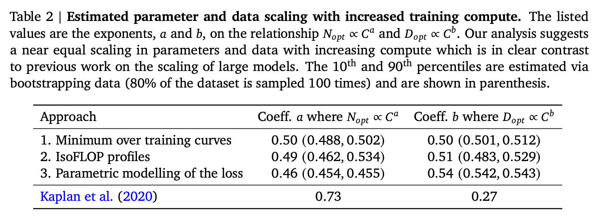
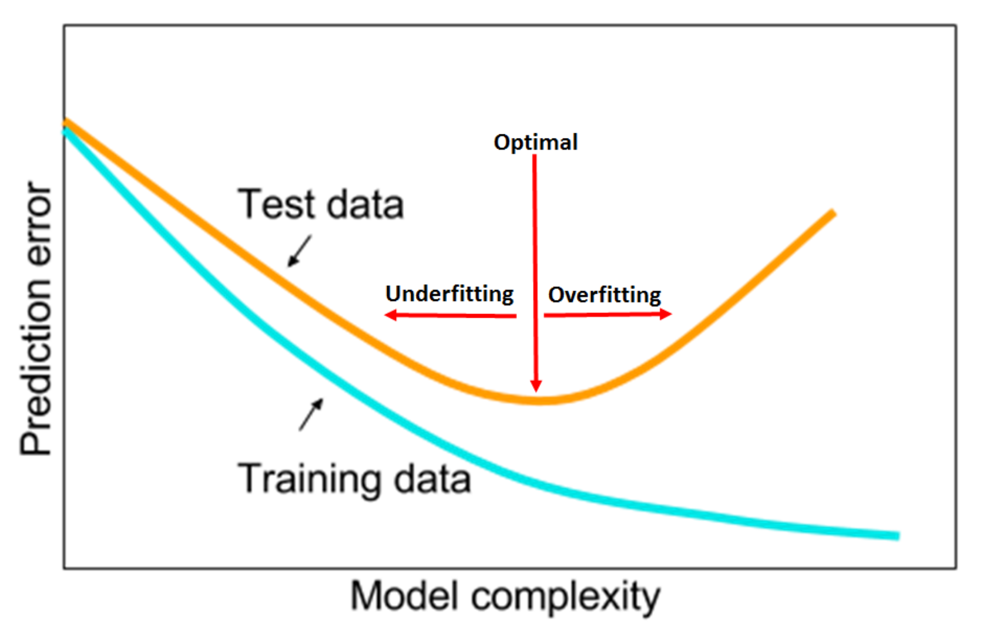

iamgianluca
About
Yet Another Blog about Machine Learning
Categories
All
(9)
advice
(1)
arxiv
(2)
bayes
(1)
books
(1)
deep learning
(2)
information-theory
(1)
jujutsu
(1)
kaggle
(1)
machine learning
(2)
news
(1)
productivity
(1)
statistics
(1)
Jujutsu - My workflow
jujutsu
Jujutsu is a relatively new version control tool that is very ergonomic and flexible. The main challenge I found is that both the official documentation and tutorials are…
Aug 1, 2025
Gianluca Rossi

Training Compute-Optimal LLMs
arxiv
In a paper published in 2022, researchers from DeepMind showed how we can extrapolate the ideal model size (N) and pre-training dataset size (D) to achieve thelowest…
Apr 17, 2023
Gianluca Rossi
Why Kaggle is the best way to sharpen your ML skills
kaggle
A recent post on Twitter made me realize many don’t notice the actual value Kaggle brings to the larger ML community and Kagglers.
Jun 19, 2021
Gianluca Rossi
How to become a more effective ML/DL practitioner
deep learning
machine learning
productivity
This article is aimed to any practitioners that wants to become more effective. This is of course just my opinion, but I hope it will help many people struggling to make the…
May 29, 2021
Gianluca Rossi
How to start a career in Data Science
deep learning
machine learning
advice
I’ve been asked this question many times by young practitioners and recent graduates. “
What advice would you give to someone starting a career in Data Science?
”.
May 28, 2021
Gianluca Rossi

The 1cycle policy
arxiv
In his most recent work, Leslie N. Smith gives extremely useful practical advice on how to train neural networks and tune the most important hyper-parameters. In his…
Oct 28, 2018
Gianluca Rossi
Statistical Rethinking
books
statistics
bayes
After reading the excellent reviews in Amazon, I decided to give it a go to the text-book Statistical Rethinking by Richard McElreath. Long story short, I can’t praise…
Sep 14, 2018
Gianluca Rossi
A brief introduction about Entropy
information-theory
Information Theory is a cornerstone of Machine Learning, yet most Data Science practitioners haven’t been formally trained on it. This blog post is meant to give a brief…
Mar 21, 2018
Gianluca Rossi
Welcome to my blog
news
Welcome to my blog!
Feb 26, 2018
Gianluca Rossi
No matching items